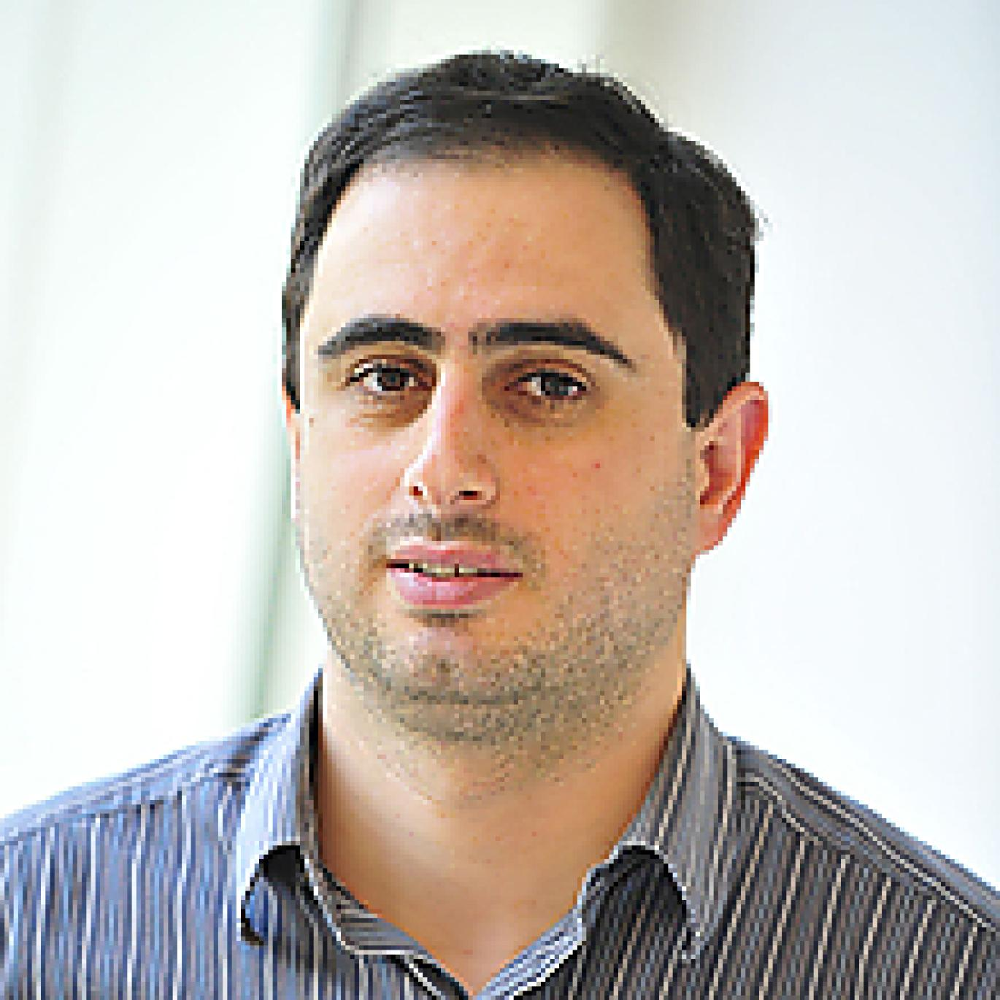
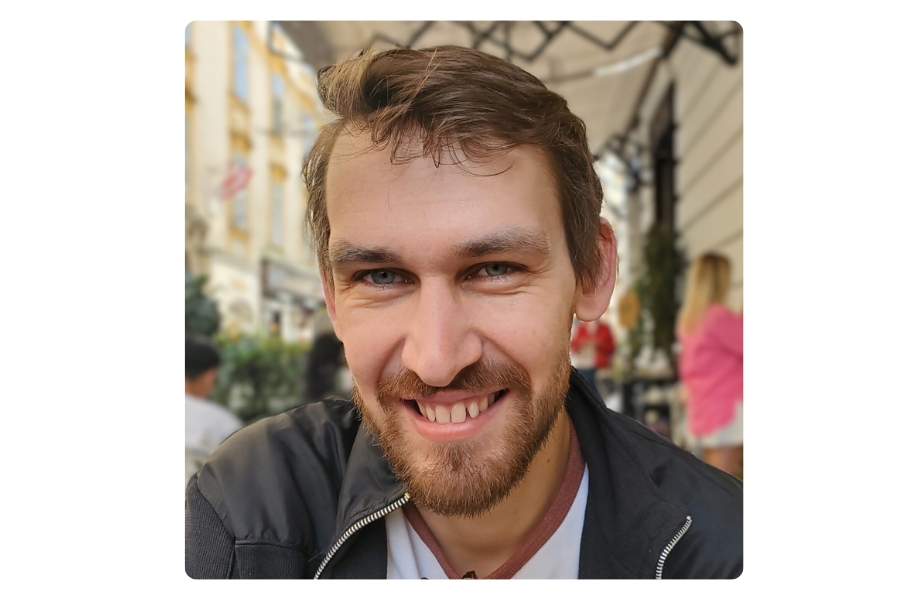
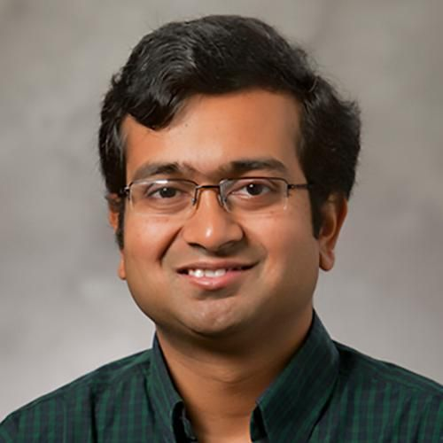

About the Workshop
Recent advances in machine learning are beginning to reshape how algorithms are designed, analyzed, and even proved correct. Beyond using learning as a heuristic speed-up, a growing body of work explores ML for algorithm design and proofs: learning-augmented algorithms with performance guarantees, data-driven synthesis of algorithmic strategies, and models that generate or verify formal reasoning such as proofs, invariants, and certificates.
These developments raise foundational questions at the interface of theory and practice: When can learned components provably improve worst-case guarantees or be used to give beyond worst-case guarantees? How should we formalize the interaction between data-driven predictions and classical algorithmic analysis? And to what extent can machine learning assist in producing explanations or proofs that are both correct and interpretable?
This workshop aims to bring together researchers from algorithms, learning theory, and automated reasoning to develop principled frameworks, identify common abstractions, and chart future directions for using machine learning in advancing theoretical computer science.
Organizers

Dravyansh Sharma
TTI-Chicago

Sandeep Silwal
University of Wisconsin–Madison

Ellen Vitercik
Stanford University
Speakers
We have an exciting line-up of speakers on this timely research topic!

Maria-Florina Balcan
Carnegie Mellon University
Hedyeh Beyhaghi
UMass Amherst
Vincent Cohen-Addad
Dylan Foster
Microsoft

MohammadTaghi Hajiaghayi
University of Maryland

Mikhail Khodak
UW–Madison
Shay Moran
Technion

Debmalya Panigrahi
Duke University
Yusu Wang
UCSD
Schedule
All times are in Central Time. The schedule is tentative and may change as talk titles and participant details are finalized.
Thursday, August 6
| Time | Session |
|---|---|
| 8:45–9:10 | Registration, coffee, and breakfast |
| 9:10–9:15 | Welcome and workshop overview |
| 9:15–10:00 |
Maria-Florina “Nina” Balcan
Learnability of Complex Objects in Modern AI
AbstractAs machine learning and AI systems become increasingly pervasive and are deployed in high-stakes domains, developing theoretical foundations to understand and analyze their behavior has become more challenging, yet more pressing than ever before. Modern AI systems learn sophisticated structures that far exceed the analytical reach of classical learning theory and increasingly operate in environments where learning occurs in the presence of other learners. In this talk, I will present new directions in learning theory that provide principled guarantees for increasingly complex AI systems. I will discuss general learnability guarantees for rich structured objects based on dual function classes and show how they apply to a broad range of settings, including using machine learning for algorithm design and automating hyperparameter tuning for machine learning itself. Finally, I will highlight emerging challenges for learning in the presence of other learners, spanning both cooperative settings and competitive strategic interactions. |
| 10:00–10:45 |
Shay Moran On the Geometry of Ranking from Counter Examples AbstractConsider the following learning problem. Alice picks a linear order over n elements, and Bob is trying to reveal it. They interact in rounds: in each round Bob proposes a linear order, and if his guess is incorrect, Alice returns a counterexample - a pair whose relative order is wrong. How many rounds can Bob guarantee in the worst case? Does the answer change if the counterexamples are chosen uniformly at random or by other, less adversarial, counterexample generators? What can be said for more restricted families of linear orders? For example, suppose the elements are embedded as points x₁,…,xₙ in ℝᵈ, and the order is determined by their distances to an unknown point x*. We will discuss these questions, present solutions to some of them, and describe several open problems and partial results. |
| 10:45–11:00 | Coffee break |
| 11:00–11:45 |
Yusu Wang Can NNs Learn Generalizable Algorithmic Procedures? AbstractA central challenge in modern machine learning is learning generalizable procedures that remain effective on unseen, potentially out-of-distribution (OOD) data. Such generalization depends on a complex interplay among model architectures, task structures, data assumptions, and training methodologies. In this talk, I will focus on the interaction between model architecture and task structure in the context of graphs tasks or geometric problems. We are particularly interested in three questions: Do different neural networks learn fundamentally different algorithmic procedures? Can OOD generalization be achieved with only finite samples? How do we probe what's learned internally? How can we use obtained insights help design more effective neural models that can tackle (geometric) problems more efficiently? I will present some of our initial studies exploring these questions. This talk is based on joint work with several collaborators, whom I will acknowledge during the talk. |
| 11:45–12:30 |
Misha Khodak Efficiently learning instance-optimal linear system solvers AbstractWe consider the problem of sequentially solving linear systems Ax=b, a fundamental problem in scientific computing, and show how to efficiently learn to do (in some cases instance-optimal) linear solver configuration while using only the number of iterations as feedback. Our theoretical results rely on a domain-informed semi-stochastic assumption on the linear systems being solved, which enables the use of anti-concentration to control solver sensitivity. We demonstrate that the approach is practically effective by using it to tune preconditioners in the widely used software OpenFOAM, obtaining a 2x speedup in linear solver wallclock on a magnetohydrodynamics problem. Lastly, we extend its applicability to much larger solver configuration spaces by introducing the first adversarial bandit algorithm that provably takes advantage of losses that are smooth with respect to a similarity graph over the arms. |
| 12:30–1:30 | Lunch |
| 1:30–2:30 |
Spotlight Session I
|
| 2:30–3:15 |
Dylan Foster Understanding the foundation model pipeline: From imitation to exploration AbstractThe prevailing recipe of ever-larger models trained on passively collected data is showing diminishing returns and facing growing constraints on data. To sustain progress, the next phase of AI will hinge on experience: agents and systems that actively curate their own data through interaction. This talk asks: which principles behind today's foundation model pipeline will carry us there, and where do we need new ones? |
| 3:15–3:30 | Coffee and poster setup |
| 3:30–5:00 | Poster session |
| 7:30-9:00 | Chicago architecture boat tour |
Friday, August 7
| Time | Session |
|---|---|
| 9:00–9:30 | Coffee and breakfast |
| 9:30–10:15 |
MohammadTaghi Hajiaghayi Faithful Leanification and Beyond AbstractI present our approach that we use agentic AI to faithfully formalize research papers in Lean, verifying their main results and core reasoning while clearly separating what each paper proves from what it imports from prior work. |
| 10:15–11:00 |
Vincent Cohen-Addad Introducing Algorithmic Thinking Theory for Foundation Models Abstract
Recent months have seen unprecedented breakthroughs in artificial intelligence for mathematical reasoning and scientific verification. From Gemini achieving gold-medal performance at the International Mathematical Olympiad (IMO), to OpenAI’s resolution of long-standing open math problems, to the deployment of the Paper Assistant Tool (PAT) which successfully identified critical theoretical flaws in thousands of submissions to STOC, ICML, and NeurIPS.
As task complexity scales to "Level 4" autonomous research, single-pass LLM generations (pass@1) hit a fundamental ceiling due to compounding logical errors and context window limits.
In this talk, we unpack the mechanics and theory of Inference-Time Scaling (ITS)—the paradigm of structuring test-time compute to solve intractable problems. We explore how empirical frameworks like the Verification & Refinement (V&R) pipeline and Recursive Self-Aggregation (RSA) successfully decompose complex proofs by separating generation, verification, and combination. |
| 11:00–11:15 | Coffee break |
| 11:15-12:00 |
Debmalya Panigrahi Online Algorithms with Predictions: What Comes Next? AbstractAlgorithms with predictions have emerged as one of the most influential developments in algorithms research over the past decade. By augmenting classical algorithmic decision-making with machine-learned forecasts, this paradigm has led to significant advances across a wide range of optimization and online decision problems. As the field matures, however, it is natural to ask: what are the next fundamental questions and challenges that will shape its future? In this talk, I will discuss two research directions that I find particularly interesting. The first part will explore the search for "universal problems": broad algorithmic principles and design frameworks that transcend individual problems, moving beyond techniques tailored to specific applications toward a more unified theory of algorithms with predictions. The second part will focus on "universal predictions": prediction models that are meaningful across problem domains, enabling a principled study of algorithmic robustness. |
| 12:00–1:00 | Lunch |
| 1:00–2:00 |
Spotlight Session II
|
| 2:00–2:45 |
Hedyeh Beyhaghi The Secretary Problem with Predictions and a Chosen Order AbstractWe study a learning-augmented variant of the secretary problem, recently introduced by Fujii and Yoshida (2023). The decision-maker has access to machine-learned predictions of candidate values in advance, and the key challenge is to balance consistency and robustness: when predictions are accurate, the algorithm should hire a near-best secretary; when they are inaccurate, it should still achieve a bounded competitive ratio. We consider both the standard Random Order Secretary Problem (ROSP), where candidates arrive in a uniform random order, and the Chosen Order Secretary Problem (COSP), where the decision-maker chooses the arrival order based on predicted candidate values — capturing scenarios such as an interview schedule set by the decision-maker. We propose a randomized algorithm that applies to both ROSP and COSP, building on the threshold-based approach of Fujii and Yoshida. For ROSP, our algorithm achieves competitive ratio max{0.221, (1−ε)/(1+ε)}, improving on their bound of max{0.215, (1−ε)/(1+ε)}. For COSP, our algorithm achieves max{0.262, (1−ε)/(1+ε)}, surpassing the 0.25 upper bound on the worst-case competitive ratio of their approach, and getting closer to the classical secretary benchmark of 1/e ≈ 0.368. Our result highlights the benefit of integrating predictions with arrival-order control in online decision-making. Based on joint work with Helia Karisani, Mohammadreza Daneshvaramoli, Mohammad Hajiesmaili, and Cameron Musco; appeared in ITCS 2026. |
| 2:45–3:00 |
Coffee break |
| 3:00–4:00 |
Community discussion and closing Collaborations, open problems, and closing remarks |
LAMP 2026 Best Poster Award
Congratulations to Senem Isik
for the poster “Bayesian Learning in Online Decision Making”
The LAMP Best Poster Award recognizes an outstanding poster contribution to the workshop, selected for its quality and presentation.
Register
Fill out the registration form to attend: https://forms.gle/NbTVo7Zz8pk3gXzA8
Call for Spotlights and Posters
We invite submissions for spotlight talks and posters, on topics related to the theme of the workshop, including but not limited to:
- Data-driven algorithm design
- Learning-augmented algorithms
- Beyond worst-case analysis and theoretical frameworks for learned algorithms
- Automated theorem proving and verification
- ML-assisted program synthesis and invariant generation
- Performative prediction and ML-based decision-making
- Interpretable and verifiable ML models for algorithmic reasoning
- Optimization, control, and learning in algorithm design
- Empirical and theoretical studies bridging ML and classical algorithms
- LLMs for algorithm design, configuration, reasoning, and analysis
- Learning to optimize
- Using ML to solve its own problems: robustness, privacy, and fairness
Who Should Attend?
The workshop is intended for researchers and students interested in the interplay between machine learning and theoretical computer science, including algorithms, optimization, online learning, automated reasoning, formal methods, verification, and learning-augmented decision making.
Planned activities include invited talks, spotlight presentations, posters, open-problem discussions, and collaborative sessions centered on ML-assisted theory.
Contact
For questions about the workshop, submissions, or logistics, please write to:
dravy[PLUS]lamp26[AT]ttic[DOT]edu